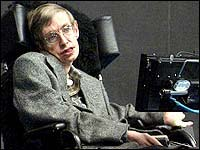
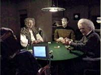
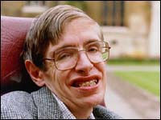

|
Um
ilustre convidado
 No
ltimo episdio da sexta temporada de A Nova Gerao ("Descent,
Part I"), a Enterprise recebeu um visitante mais do que
especial. Logo no incio do episdio, vemos Data participando de
uma partida de pquer, onde seus adversrios so ningum mais,
ningum menos que sir Isaac Newton, Albert Einstein e Stephen
Hawking --considerados os trs maiores nomes da fsica. A
novidade neste caso que, enquanto Newton e Einstein foram
interpretados por atores convidados, Hawking foi interpretado por
si mesmo. Este o nico caso em que uma pessoa aparece em um
episdio da srie interpretando a si mesmo. E que convidado! No
ltimo episdio da sexta temporada de A Nova Gerao ("Descent,
Part I"), a Enterprise recebeu um visitante mais do que
especial. Logo no incio do episdio, vemos Data participando de
uma partida de pquer, onde seus adversrios so ningum mais,
ningum menos que sir Isaac Newton, Albert Einstein e Stephen
Hawking --considerados os trs maiores nomes da fsica. A
novidade neste caso que, enquanto Newton e Einstein foram
interpretados por atores convidados, Hawking foi interpretado por
si mesmo. Este o nico caso em que uma pessoa aparece em um
episdio da srie interpretando a si mesmo. E que convidado!
 Stephen
William Hawking nasceu em 8 de janeiro de 1942, na Inglaterra.
Contra os interesses de seu pai, que queria v-lo mdico,
Hawking concentrou seus estudos em fsica na faculdade de Oxford.
Aps a formatura, se mudou para Cambridge, concentrando seus
estudos em Cosmologia, ramo da cincia onde conseguiu se tornar
Ph.D. Em 1973, transferiu-se para o Departamento de Matemtica e
Fsica Terica onde, em 1979, foi-lhe designado o posto de
"Professor Lucasiano de Matemtica" --cargo que
anteriormente pertencera a Newton.
O trabalho de Hawking concentrou-se nas leis bsicas que regem o
Universo. Em parceria com Roger Penrose, demonstrou que a teoria
da relatividade geral, de Einstein, implicava que o tempo e o
espao comearam no Big Bang, e que teriam um fim em buracos
negros. Esses resultados indicaram que era necessrio unificar a
teoria da relatividade mecnica quntica, o outro grande
desenvolvimento cientfico da primeira metade do sculo 20. Uma
conseqncia dessa unificao o levou a descobrir que buracos
negros no so completamente negros, mas que emitiriam
radiao e que eventualmente desapareceriam. Uma outra
conjectura sua que o Universo no teria limites ou bordas em
um tempo imaginrio. Isso significa que a maneira como o Universo
foi criado foi completamente determinada pelas leis da fsica.
O
nome de Hawking se tornou conhecido do grande pblico em 1988,
com o lanamento do livro "Uma Breve Histria do
Tempo", que vendeu mais de 9 milhes de cpias em 33
pases. O sucesso do livro o tornou incrivelmente popular, e a
mdia o classificou como a "pessoa mais inteligente do
mundo". "Isso muito embaraoso. tolo, apenas
frissom da mdia. Eles apenas querem um heri, e eu me encaixo
no modelo de um gnio deficiente. Pelo menos eu sou deficiente,
mas no sou nenhum gnio", comenta Hawking, a respeito de
sua popularidade.
Hawking realmente deficiente. Ele possui ALS (esclerose lateral
amiotrfica), tambm conhecida como doena de Lou Gehrig, uma
doena neuromuscular que progressivamente enfraquece o controle
muscular. A doena foi diagnosticada quando Hawking tinha apenas
21 anos, e na poca os mdicos estimaram que ela levaria a uma
morte prematura. Hoje, Hawking est com 60 anos de idade,
casado e possui trs filhos. Precisa de uma cadeira de rodas para
se locomover, e, aps perder completamente o uso de suas cordas
vocais em 1985 (durante uma cirurgia que visava auxiliar sua
respirao), ele se comunica atravs de um computador. Um
sintetizador de fala "fala" por ele aps ele selecionar
em um software as palavras que deseja pronunciar, pressionando um
plugue com sua mo. Sem perder o humor, Hawking comenta:
"Infelizmente, o sintetizador faz parecer que eu tenho um
sotaque americano!"
Mas como este grande nome da fsica moderna aceitou fazer uma
ponta em um episdio de Jornada nas Estrelas?
Em 1993, Hawking estava no Estdio 8 da Paramount, durante a
campanha de divulgao do documentrio "Uma Breve
Histria do Tempo", que narra sua vida e obra. Rick Berman
relembra ento o que aconteceu: "Eu recebi um telefonema
dizendo que Stephen Hawking estava no Estdio 8 e queria vir
conhecer os cenrios de Jornada nas Estrelas. Me perguntaram se
seria possvel, e eu disse, 'Claro que sim', e desci
imediatamente para o estdio. Fui apresentado a ele, e
perguntei-lhe se gostaria de ver mais. Ele disse que aceitava,
atravs de seu sintetizador de voz. Quando chegamos ponte da
Enterprise, ele comeou a preparar algo para dizer. (...) Aps
ficar mais ou menos um minuto apertando aquele pequeno boto, o
computador pronunciou uma frase que eu jamais vou esquecer. Ele
disse, 'Voc poderia me levantar da minha cadeira e me colocar na
cadeira do capito?' Foi uma viso incrvel ter aquela que
talvez seja a mente mais brilhante da segunda metade do sculo 20
em matemtica aplicada e fsica querendo naquele momento, mais
do que qualquer outra coisa, se sentar na cadeira de Picard."
 Berman
ficou mais surpreso ainda no dia seguinte, ao receber um
telefonema de seu ento amigo Leonard Nimoy. Nimoy havia
participado na noite anterior da festa de lanamento do
documentrio de Hawking e disse que o professor havia lhe
manifestado o desejo de participar de um episdio da srie.
"No dia seguinte eu convoquei a equipe e, com a ajuda de Ron
Moore, bolamos a idia da cena em que Data vai ao holodeck jogar
pquer, simulando as imagens de Newton, Einstein e Hawking.
Pedimos ento a ele que fizesse alguns comentrios sobre o
roteiro desta cena, ele leu e disse que adorou."
Brent Spiner, que interpretou a famosa cena, disse que trabalhar
com Hawking foi um dos pontos altos da temporada. "Ele um
ator fabuloso, sua maneira. No acredito que ningum poderia
t-lo representado to bem quanto ele mesmo. Ele estava muito
empolgado por poder estar ali, e eu estava mais nervoso do que
durante o ano inteiro porque no estou acostumando a interpretar
cenas com o homem mais brilhante do Universo!", comentou
Spiner.
 Afinal,
Hawking era, e continua sendo, f de Jornada nas Estrelas.
E, sem dvida, foi o mais ilustre convidado que qualquer uma das
sries j recebeu. Os fs brasileiros podero conferir esta
participao ainda este ano, quando a sexta temporada chegar ao
seu final.
Fernando
Rodrigues editor do boletim Base News e escreve regularmente
sobre a Nova Gerao para o Trek Brasilis
|